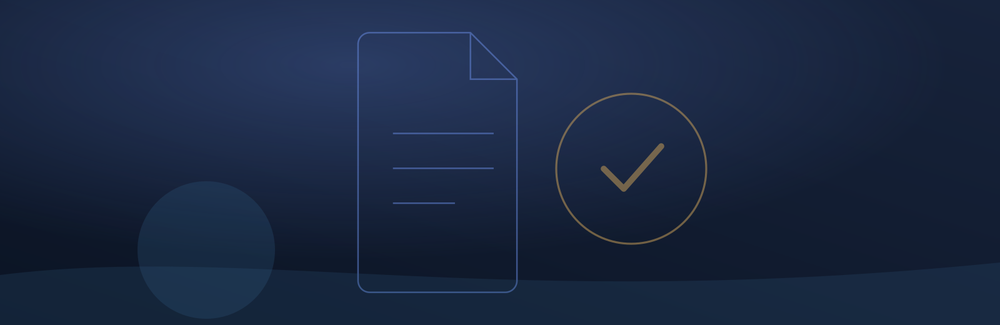

Centro de Psicología Clínica
Un proyecto completo para un centro de psicología ficticio, hecho para mostrar cómo trabajamos: el sitio donde los pacientes reservan, su portal y el panel donde el profesional administra todo. Corre en el navegador con datos de ejemplo, así que puedes recorrerlo entero.
Probar la demo ↗ Código en GitHub ↗
Qué incluye
El paciente reserva solo
Elige servicio, día y modalidad según la disponibilidad real de la agenda.
Portal del paciente
Citas, documentos, recursos, comunidad, opiniones por servicio y tickets de ayuda.
Panel del profesional
Agenda semanal, bloqueos de fechas, pacientes y pagos, invitaciones y métricas del consultorio.
Cuentas y correos
Registro con verificación por código y correos transaccionales con plantillas propias.
Cómo está hecho
Quién lo hizo
Ver el equipo →¿Quieres algo así para tu negocio?
Lo hacemos a medida, con tu marca, tus servicios y tu forma de trabajar: el sitio para tus clientes y el sistema de administración para ti.